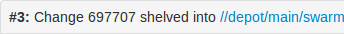

Activities
This section describes the major activities that affect code reviews, including starting a review, updating a review, and fetching a review's files.
Start a review
If your Helix server is configured as a commit-edge deployment, and your normal connection is to an edge server, Swarm refuses to start reviews for shelved changes that have not been promoted to the commit server.
Within Swarm, this means that the Request Review button does not appear for unpromoted shelved changes. Outside of Swarm, attempts to start reviews for unpromoted shelved changelists appear to do nothing. Ask your Helix server administrator for assistance if you cannot start a review.
An administrator of the Helix server can automatically promote shelved changes to the commit server by setting the configurable dm.shelve.promote to 1.
If your changelist only contains a stream spec and its location in the Helix server is not associated with a Swarm project, the review that you create will not have any default reviewers or workflow rules. To associate the review with a project so that it has default reviewers and obeys the project workflow rules, include a file change from the project path in the changelist when you create the review.
- Use the P4D command line or a P4D client to create the shelved or committed changelist.
- Start a code review by using one of the following approaches:
Use Swarm:
- Use Swarm to view a shelved or submitted changelist.
- Click the Request Review button to request a review of that changelist.
To view a shelved or submitted changelist, use a Quick URL. For example, if your change is 54321, visit the URL: https://myswarm.url/54321.
Requesting a review on a shelved changelist uses the pre-commit model and requesting a review on a submitted changelist uses the post-commit model.
Use P4D command line:
When you are about to shelve or submit files:
-
Include
#reviewwithin your changelist (separated from other text with whitespace, or on a separate line).Once the review begins, Swarm replaces
#reviewwith#review-12345, where12345is the review's identifier.NoteThe
#reviewkeyword is customizable. For details, see Review keyword. - At this time, you can add reviewers to the code review by using @mention for users, and @@mention for groups in the changelist description for each desired reviewer.
- Complete your shelve or submit operation.
If your @mention or @@mention includes an asterisk (*) before the userid or groupid, for example @*userid, that user or all of the group members become required reviewers. If your @@mention includes an exclamation mark (!) before the groupid, for example @@!groupid, the members of that group become required reviewers but only one member of the group is required to vote. See Required reviewers for details.
If you shelve a changelist and subsequently edit the description to include #review, a review is not started. You must re-shelve the files after adding #review.
Use Git Fusion:
- When you are using Git Fusion
 (No longer offered to new customers) A Perforce product that integrates Git with Helix, offering enterprise-ready Git repository management, and workflows that allow Git and Helix server users to collaborate on the same projects using their preferred tools., you can start a review by pushing your changes to a target branch using the following command:
(No longer offered to new customers) A Perforce product that integrates Git with Helix, offering enterprise-ready Git repository management, and workflows that allow Git and Helix server users to collaborate on the same projects using their preferred tools., you can start a review by pushing your changes to a target branch using the following command: - When the command completes, the output indicates the
review idthat has been created:
$ git push origin task1:review/main/new
task1 is the name of the current Git task branch, and main is the target branch that the proposed changes are intended for.
The target branch must be mapped to a named Helix server branch in the Git Fusion repo configuration.
See the Converting a lightweight branch into a fully-populated branch section of the Git Fusion Guide for details.
remote: Perforce: Swarm review assigned: review/main/1234
where 1234 is the review id that was just created.
For more information on Git Fusion, see the Git Fusion Guide.
You can also start a Swarm review with P4V, P4VS, and P4Eclipse. See below for details:
- P4V: see the Swarm integration features section of the Helix Core Visual Client (P4V) Guide.
- P4VS: see the Managing files chapter of the P4VS User Guide.
- P4Eclipse: see the Reviewing changes chapter of the P4Eclipse User Guide.
If you are using P4V and its Swarm integration, and you encounter the error Host requires authentication, ask your Helix Core server administrator for assistance. See P4V Authentication for details.
Update a review
To update a code review, use one of the following approaches:
-
For a pre-commit review that you authored:
- Edit the files
- Shelve the files
You can repeat these steps as many times as necessary.
TipIf you want to stop Swarm from updating the review until you have completed your changes, add the work-in-progress tag (#wip by default) to the changelist description. For information on using the work-in-progress tag, see Work-in-progress tag.
-
For a post-commit review, or a review where you are not the author:
- Fetch the review's files into a new changelist
- Edit the files
- Update the changelist's description to include
#review-12345(separated from other text with whitespace, or on a separate line) - Shelve the changelist's files
Once these steps are complete, further updates involve editing the files, and then shelving the changelist's files.
WarningIf you use an invalid review identifier, it will appear that nothing happens. Swarm is currently unable to notify you of this situation. If the review has not been correctly updated, use the Add Change button in the Swarm review heading to add the changelist to the review, see Add a changelist to a review.
-
Important
You can only update Git Fusion-initiated reviews using Git Fusion.
In the following example, the current Git task branch is
task1, the target branch ismain, the review id is1234, the Git Fusion hostname isgfserver, and the remote repo name isp4gf_repo.-
Fetch the review's head version:
$ git fetch --prune origin
From gfserver:p4gf_repo
* [new_branch] review/main/1234 -> origin/review/main/1234
x [deleted] (none) -> origin/review/dev/newThe
--pruneoption lets the local Git repo delete the unwantedreview/main/newreference created by the initialgit push origin task1:review/main/newcommand. -
Check out the review's head version:
$ git checkout review/main/1234 - Edit the files as required.
-
Add the edited files to the index of files, in preparation for the next commit.
There are several ways to do this. For example, to add all modified files to the index, run:
$ git add -A -
Commit the files in Git:
$ git commit -m "made some changes" -
Push the Git changes to the review:
$ git push origin review/main/1234NoteIf you get review feedback that is better expressed as a Git rebase and cleaned up history, you can make your changes and push them as a new review.
You cannot clean up history and then push your changes to the same review.
For more information on Git Fusion, see the Git Fusion Guide.
-
Fetch a review's files
First, determine the changelist containing the review's files:
- Visit the review's page.
-
The current review version's changelist appears in the file list heading:
In this example, the changelist is
697707. You use the identified changelist in place of shelved changelist below. - Decide whether you will use P4, P4V, or Git Fusion to fetch the files, and follow the instructions in the appropriate section below.
Using P4
-
For a shelved changelist, use a command-line shell and type:
$ p4 unshelve -s shelved changelist -
For a committed changelist, use a command-line shell and type:
$ p4 sync @committed changelist
Your client's view mappings need to include the changelist's path.
Using P4V
For a shelved changelist:
- Select Search > Go To.
- Change the select box to Pending Changelist.
- Type in the shelved changelist number and click OK.
- Select the files in the Shelved Files area.
- Right-click and select Unshelve.
- Click Unshelve.
For a committed changelist:
- Select Search > Go To.
- Change the select box to Submitted Changelist.
- Type in the submitted changelist number and click OK.
- Select the files in the Files area.
- Right-click and select Get this Revision.
- Click Close.
Using Git Fusion
In the following example, the current local task branch is task1, the target branch is main, the review id is 1234, the Git Fusion hostname is gfserver, and the remote repo name is p4gf_repo.
-
Fetch the review's head version:
$ git fetch --prune origin
From gfserver:p4gf_repo
* [new_branch] review/main/1234 -> origin/review/main/1234
x [deleted] (none) -> origin/review/dev/newThe
--pruneoption lets the local Git repo delete the unwantedreview/main/newreference created by the initial gitpush origin task1:review/main/newcommand. -
Check out the review's head version:
$ git checkout review/main/1234
You can only update Git Fusion-initiated reviews using Git Fusion.
For more information on Git Fusion, see the Git Fusion Guide.
Deleting shelves
If you have a number of unused shelves, you can delete them if you want to tidy up your workspace.
By default, when you delete files from a shelved changelist, the files are not removed from the associated review.
However, Swarm can be configured to remove files from a review when they are deleted from an associated shelf, see Process shelf file delete when.
Do not use the Swarm user that is configured in the Swarm configuration file when deleting shelves, or deleting files from shelves. The Swarm logic processes the shelve-delete trigger event, if the event is invoked by the Swarm user it is rejected. The delete operations will fail.
To delete a shelf from a changelist without removing the shelved files from the associated review, use P4 or P4V to delete the entire shelf in one operation as described below. This enables you to delete a shelved changelist in your workspace without affecting the associated Swarm review even if Swarm is configured to remove files from a review when they are deleted from a shelf.
Using P4
To delete a shelved changelist without removing the files from the associated review:
- Use a command-line shell and type:
- The shelved files are deleted from the pending changelist.
$ p4 shelve -d -c changelist
Do not delete the files from the shelf individually. Deleting the entire shelf ensures that files are not removed from an associated review even if Swarm is configured to do so.
Using P4V
To delete a shelved changelist without removing the files from the associated review:
- In P4V, right-click on the pending changelist.
- Select Delete Shelved Files.
- The shelved files are deleted from the pending changelist.
Do not delete the files from the shelf individually. Deleting the entire shelf ensures that files are not removed from an associated review even if Swarm is configured to do so.
Edit reviewers
A review author can edit the reviewers for a review by using the Reviewers Edit  button in the review page Information panel. Reviewers are able to join or leave reviews, or to change whether their vote is required or optional.
button in the review page Information panel. Reviewers are able to join or leave reviews, or to change whether their vote is required or optional.
If the review includes content that is part of a project or branch with Retain default reviewers enabled, the following restrictions apply to the review:
- The voting option for a retained default reviewer can only be changed to a stricter level, you cannot reduce the voting level.
- Retained default reviewers cannot be removed from the review.
Additionally, the following individuals can edit reviewers:
- Users with admin or super privileges.
- If the review is moderated, the moderators.
- If the review is part of a project, but not moderated, all project members.
- If the review is not part of a project, any authenticated user.
To edit reviewers on a review:
-
Go to the review.
-
From the review Information panel, click the Reviewers list Edit
 button.
button. -
Click the Users tab to edit a user or the Groups tab edit a group .
-
Change the voting requirements of a user or group:
-
Click the dropdown arrow to the right of the user or group you want to change.
-
Select one of the following:
-
- Users: select whether their vote is Required or Optional. A solid star means that their vote is required to approve a review, whereas the outlined star means that their vote is optional.
- Groups: select whether the group vote is Require all, Require one, or Optional. A solid star means that all group member votes are required to approve a review, a solid star with a 1 inside means at least one group member must vote up and no group members vote down to approve a review, and the outlined star means that the group vote is optional.
-
Add a user or group to a review:
-
Click the Add user or Add group dropdown icon to display a list of users or groups:
-
Start typing the user or group name, the list is filtered as you type.
-
Click on the user or group to add to the review.
-
Click + to add them as a reviewer.
-
Set the reviewer type from the dropdown to the right of the user or group.
-
-
Remove a user or group from a review:
-
Click the dropdown icon to the right of the user or group to be removed.
-
Select Remove from the review from the dropdown menu.
-
-
To close the Manage reviewers dialog, click X.
The Manage reviewers dialog is displayed.